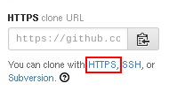

Repository Setup
(work in progress)
Backend Repositories
The buildserver needs these two repositories in order to operate. They must be cloned from the repositories found on GitHub
Buildserver Setup
RootFS Buildroutine
Product Repositories
Setup an empty repository for each of the products. They will be used by the users to provide their build specifications to the buildserver.
| Product | Repository |
|---|---|
| U-Boot | uboot-specs |
| Linux | linux-specs |
| RootFS | rootfs-specs |
| Miscellaneous files | misc-specs |
| Toolchain | toolchain-specs |
If you don't know how to setup empty repositories, have a look at github hello world. Please document the repositories URLs in the User Documentation. For the embEDUx build system you need the https version of the URL, which can be obtained on the lower right side on the Github website of the repository.
